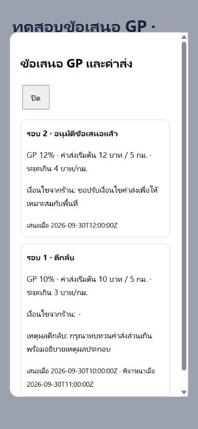

ข้อเสนอ GP และค่าส่ง · ผลพัฒนา
30 กันยายน 2026 · implementation ในเครื่องและ review ผ่าน
ยังไม่ deploy production และยังไม่ได้ build แอปใหม่
สรุปผล
- ตรวจอะไรไปแล้ว: flow สมัครร้านค้า, auth gate, แพ็กเกจ GP, การอนุมัติร้าน Web/Flutter และ guard/RPC
- แก้อะไรไปแล้ว: เสนอ GP และค่าส่งเอง คำอธิบาย GP สถานะ ประวัติ เหตุผลตีกลับ และปุ่มเสนอใหม่
- ทดสอบอย่างไร: Flutter 26 tests, analyze 12 files, Admin Web 5 tests และ syntax, PostgreSQL17 fixture และ concurrencyสองconnection, browserข้อมูลจำลอง390×844
- ผลลัพธ์: checksข้างต้นผ่าน code_reviewerพบ4จุด แก้และตรวจซ้ำผ่าน ไม่พบblockerใหม่
- ความเสี่ยงที่เหลือ: ยังไม่มีproduction schema/deploy verification, device UAT หรือ full Flutter→Supabase→Admin live E2E; ไม่ได้รัน Deno check เพราะไม่มีDeno CLI
- บันทึก Obsidian: log/current/project/decisions/log-index และissue/index
- สร้าง skill: merchant-gp-proposal-verification ใน Obsidian สำหรับวิธีทดสอบซ้ำ
- code_reviewer: ผ่านในscope GP ไม่รวมdirtychangesเดิมเรื่องรูปจบงานคนขับ
การใช้งาน
ตอนสมัครเลือกระหว่างแพ็กเกจเดิมกับ “เสนอ GP และค่าส่งเอง” กรอกGP ค่าเริ่มต้น ระยะครอบคลุม และค่าส่งส่วนเกิน พร้อมยอมรับว่าต้องรออนุมัติ ร้านยังเข้าแอปเตรียมร้าน/เมนูได้เหมือนเดิม เปิดร้านได้เมื่อแอดมินอนุมัติทั้งเงื่อนไขและร้าน
ร้านติดตามที่บัญชีร้าน → แพ็กเกจ GP: ดูสถานะ/ประวัติ เมื่อตีกลับมีเหตุผลและปุ่ม “แก้ไขและเสนอใหม่” ฟอร์มเติมค่ารอบเดิมและเก็บประวัติแต่ละrevision
Admin Web มีปุ่มข้อเสนอในรายการร้าน Admin Flutter มีปุ่มดูและพิจารณาข้อเสนอในแต่ละการ์ด แอดมินระบุ GPsplitระบบ/คนขับรวมตรงกับข้อเสนอ หรือตีกลับโดยบังคับเหตุผล
หลักฐาน
Flutter26/26: validation/status/reason/history/retry/acceptedterms/GP10.25ไม่ปัด/draftbank-back/layout390px
SQLfixture: owner isolation, directwrite/metadata protection, pendingไม่เปลี่ยนอัตราจริง, approvegate, reason, resubmit/latestrevision, splitmismatch, decimal8.2+6.8, fixeddeliveryoverride และlifecycleบัญชีfixture
สองconnection: submitพร้อมกันสร้างหนึ่งข้อเสนอ reviewพร้อมกันสำเร็จหนึ่งครั้งและอีกครั้งstale ร้านยังpending
Browserfixtureใช้moduleAdminจริงกับข้อมูลจำลอง: modal/history, ตีกลับว่างถูกป้องกัน, ตีกลับพร้อมเหตุผล, อนุมัติGP12%split7+5; dialog352.4pxในviewport390px

ภาพเป็นข้อมูลจำลอง ไม่ใช่production
Rollout
migrationใหม่: supabase/migrations/20260930120000_merchant_gp_proposals.sql เพิ่มตาราง/RLS/metadata/RPC/approvalguard เก็บข้อเสนอแยกจากอัตราจริง ใช้profilelockและuniquependingindex
ก่อนrolloutตรวจprerequisite GPmigrations/schema/policiesในenvironmentเป้าหมาย รวมbackup/impact/approval แล้วตรวจstaging migration→EdgeFunction→AdminWeb→AppE2Eก่อนproduction
เลือกแพ็กเกจหลังตีกลับจะsupersedeประวัติและล้างmetadata ข้อเสนอapprovedกลายเป็นดีลตรง การอนุมัติข้อเสนอไม่เปิดร้านอัตโนมัติ
ไม่ได้commit/push/build จึงไม่ได้bumpversionใหม่ เก็บversionและdirtychangesงานก่อนหน้าไว้